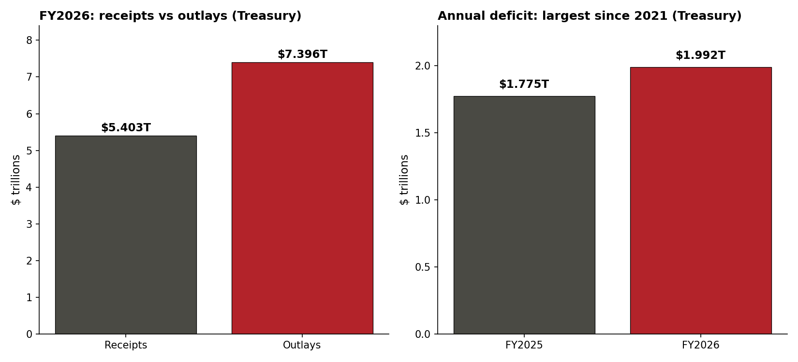
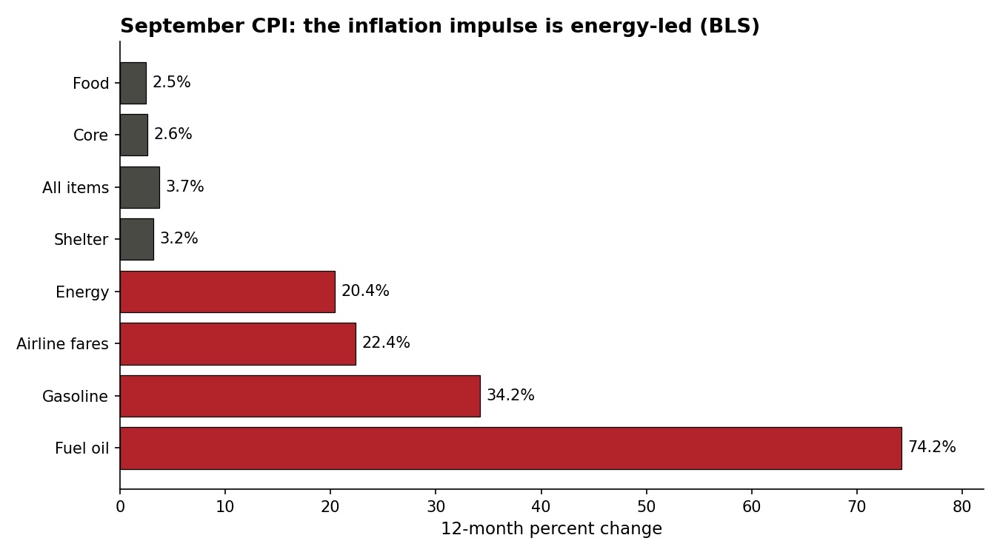
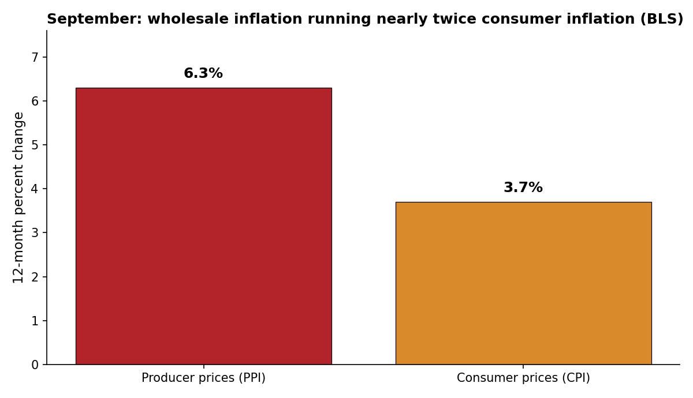
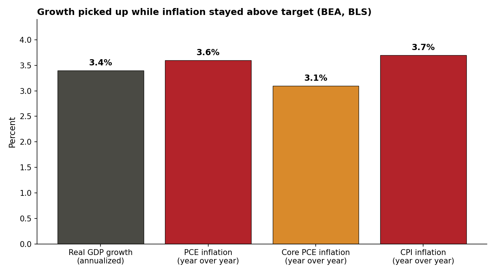

The Ledger
The economy in plain English: what the Fed did, what inflation is actually doing, what it all means for your wallet — plus the policy changes moving the money. Updated monthly.
The big number: $1.99 trillion
What happened: The federal government's books closed on the fiscal year with a deficit of $1.992 trillion — the largest shortfall since the pandemic years and the third-largest on record (Treasury Monthly Treasury Statement; CBO). The government collected a record $5.403 trillion and spent a record $7.396 trillion. Spending grew about 6%; revenue grew about 3%. Total debt closed the fiscal year at $40.17 trillion, and the debt total passed $40.5 trillion during the month, with $32.64 trillion held by the public.

Incentives: Two line items explain most of the widening. First, interest on the debt: $1.36 trillion gross, a record, up about 12% — the average rate on the debt climbed to 3.53%. Net interest, after subtracting what the government pays itself, topped $1 trillion for the first time, making it the third-biggest federal expense behind Social Security ($1.667 trillion) and Medicare ($1.073 trillion), and ahead of national defense ($965 billion). Net interest took 19.5% of all federal revenue. Second, tariff refunds: after the Supreme Court struck down a large share of the administration's tariffs, the government paid back a reported $145 billion to importers, and net tariff revenue fell to about $173 billion. The deficit runs about 6.2% of GDP.
The mechanism is arithmetic. A $40 trillion-plus debt at a 3.53% average rate generates an interest bill that grows even if spending freezes. Every additional trillion borrowed at current rates locks in the payout to bondholders, and the payout is funded by the same taxpayers who pay the borrowing costs on their own mortgages.
The Fed: a hold, with two votes for a hike
What happened: The Federal Reserve held its benchmark rate at 3.75%–4.00% at the month's meeting, pausing after the quarter-point hike the month before — the first hike since July 2023. The vote was 10–2: Governor Lisa Cook and Cleveland Fed President Beth Hammack dissented in favor of another quarter-point increase. The committee described activity as expanding at a strong pace and inflation as elevated, and said the accumulation of more information would help determine the appropriate policy stance. Markets priced roughly 85% odds of a hike at the next meeting. The committee also announced that, starting next year, one of its eight annual meetings will be devoted to strategy rather than a rate vote.
The bond market did part of the tightening on its own. The 10-year Treasury yield peaked at 5.35%–5.36% early in the month, its highest since 2002 by one measure and since 2007 by another, then eased back to about 5.0% by the month's final week. A 10-year yield near 5% is the market's price for lending to a government running a $1.99 trillion deficit: the deficit is the supply of bonds, and the yield is what buyers demand to absorb it.
Incentives: The hold, the dissents, and the market pricing pull in three directions at once. The committee majority gains time to see whether the inflation impulse is a fuel shock that reverses or a core trend that sticks. The two dissenters gain a public record that they wanted to move sooner if inflation stays elevated. The market gains a priced-in hike it can trade against, which moves mortgage and loan rates before the committee votes again.
Inflation: 3.7%, and the pump is doing the damage
What happened: Consumer prices rose 3.7% over the year, up from 3.4% the prior month (BLS). Gasoline jumped 9.1% in a single month and accounted for more than half of the entire monthly increase. Fuel oil is up 74.2% from a year ago; gasoline 34.2%; energy as a whole 20.4%. Groceries fell 0.1% on the month. The fuel shock is concentrated: the pain sits at the pump and in the heating bill, while the checkout line eased slightly.

The stickier signal sits underneath the headline. Core inflation, everything except food and energy, rose to 2.6% from 2.4%, and shelter — the biggest household cost — keeps grinding at 3.2% a year. The Fed's preferred gauge tells the same story from a different angle: the PCE price index rose 3.6% over the year, with core PCE at 3.1%, both above the Fed's 2% target. September PCE rose 0.5% in the month, the second-hottest monthly print since June 2022 by one analyst's count.
Then the wholesale numbers landed hotter still. Producer prices surged 1.3% in one month, the biggest jump since March 2022, pushing wholesale inflation to 6.3% a year — the highest since December 2022. Goods prices rose 2.6% in a month, the largest increase since that series began in 2009. Core wholesale prices, excluding food and energy, rose 0.7%, the fastest in five months.

Incentives: Wholesale costs lead consumer prices. What businesses pay now is what households pay later, unless businesses absorb the margin hit. The gap between core wholesale prices at 5.0% and core consumer prices at 2.6% closes through company margins or through consumer price increases in the months ahead. Either way, someone pays: shareholders through smaller margins, or households through higher prices.
Growth and jobs: output accelerates, hiring stalls
What happened: Real GDP grew at a 3.4% annualized pace in the third quarter, up from 2.2% in the second quarter and above the consensus forecast of about 3.2% (BEA advance estimate). Consumer spending rose 3.8% on an annualized basis; private investment rose 19.4%, with equipment spending up 20.9%; residential investment fell 3.3%. The advance estimate is the first of three readings and will be revised.

Jobs told a different story. Employers added 29,000 jobs in the month's jobs report, far below the roughly 84,000 economists expected, and the unemployment rate ticked to 4.2% (BLS). The Bureau of Labor Statistics says a monthly payroll change needs to be about 122,000 to be statistically significant — so 29,000 cannot be told apart from no change at all. The revisions cut deeper than the headline: the prior two months were revised down by a combined 60,000, with one month revised from a gain of 21,000 to a loss of 10,000. Wages rose 0.1% on the month to $37.81 an hour, up 3.0% on the year — below inflation, so the average paycheck buys slightly less than a year ago. The personal saving rate slipped to 3.8%, its lowest since October 2022.
Household sentiment matched the jobs data more than the GDP data. The University of Michigan's final sentiment index for the month was 48.0, effectively unchanged from 48.1 the prior month and the second-lowest reading in the survey's history after 44.8 in May. Current conditions fell to 46.7 from 50.9, while expectations rose to 48.8 from 46.3. Households expected 4.7% inflation over the next year, up from 4.6%, and 3.5% over the longer run, up from 3.4%.
Incentives: The split between output and hiring is the split between who owns the growth and who works for it. Equipment investment, led by computing hardware, lifts measured output without adding payrolls at the same rate. A 29,000 payroll print against 3.4% GDP growth means the economy is producing more with roughly the same workforce — good for measured productivity, thin for job seekers, and a reason wage growth trails inflation.
What it means for your wallet
Mortgages: Back above 7% on live quotes, and the refinance market stays effectively closed. On a $300,000 loan, the difference between 6% and 7% is roughly $200 a month, every month, for 30 years. Purchase applications are down about 19% from a year ago. First-time buyers absorb all of it.
The pump: Gasoline is running $4.17 a gallon nationally, up 37.3% from a year ago (EIA). Diesel averaged $6.29 during the month (EIA). The fuel shock is the inflation story: the CPI shows fuel doing most of the damage while grocery prices slipped.
Credit cards and car loans: Balances sit at $1.263 trillion, up 4.5% on the year (New York Fed). These rates follow the Fed with a short lag, and the market pricing says the Fed is not done. Carrying a balance at these rates is a pay cut scheduled in advance.
Savers: Still the one group that wins — savings yields stay elevated. The same policy pressing on borrowers keeps paying savers. The distributional story is plain: inflation-fighting aims at prices and lands on people who borrow.
Energy and the world
What happened: Oil spent the month priced for war and then priced for talks. Brent crude traded around $114–$115 a barrel and West Texas Intermediate around $101–$102 in the month's final week, after Brent gained about 6% the prior week on attacks on Saudi energy sites and Houthi strikes. Reports that the vice president wrote to Iran's security chief seeking to restart peace talks, and that Qatari mediators presented Tehran with a draft agreement, pulled both benchmarks down about 1% in a session; a senior Iranian official called the draft unacceptable and not a formal offer. The International Energy Agency signaled readiness to coordinate further releases, prioritizing diesel, and Europe moved ahead with a 42-million-barrel emergency release tranche, including 10 million barrels of diesel from France. The United States licensed Russian diesel imports through the spring under a general license, after a phone call in which Russia offered between 300,000 and 3 million metric tons of diesel to U.S. and global markets.
Incentives: Every actor in the oil market profits from a different price. Producers gain from the risk premium; refiners gain from the crack spread between crude and diesel; governments holding emergency stocks gain a stronger negotiating position by releasing them. The diesel market is the pressure point: record U.S. diesel prices and a European diesel shortage give any holder of diesel stocks a bargaining position that crude holders do not have.
Brazil: Luiz Inácio Lula da Silva won a fourth term with 51.8% of valid votes against 48.2% for Flávio Bolsonaro, a margin of about 4.4 million votes — the first candidate since 1989 to win a runoff after placing second in the first round (TSE official count). Markets had priced a Bolsonaro win: the Ibovespa fell 13.9% in the next session, the real fell more than 11% at one point, and the U.S.-listed Brazil ETF fell about 20%. The exchange widened its trading band, and the National Treasury canceled scheduled bond auctions and bought back R$7.1 billion of bonds. The session after, the real recovered about 2% and the Bovespa rose about 1%. The fiscal arithmetic behind the reaction: gross public debt past 82% of GDP, a policy rate of 13.75%, inflation at 4.6% against a central bank tolerance ceiling of 4.5%, and the government's own projections putting debt near 90% of GDP by 2029. The incoming Congress is the most conservative since the return to democracy, which limits the incoming government's room to spend.
Policy changes tracker
▲ Graham Act: imposed, then waived. The law required tariff and sanctions measures within 30 days of its signing — duties of up to 500% on Russian goods and up to 100% on the largest buyers of Russian oil and gas. Two days before the deadline, the president signed an executive order applying the duties and waiving them in the same document, certifying to Congress that the waiver serves the national interest. The waiver has no end date; the measures stay suspended until the president or senior officials decide otherwise. Existing Russia sanctions under earlier executive orders stay in force, and the trade representative must monitor Russian oil and gas purchases and report to Congress. The incentive is plain: a waivable mandatory sanction is a bargaining chip, not a penalty — the threat stays on the books while the cost stays suspended.
▲ Continuing resolution: funded through December 11, no shutdown. Congress passed and the president signed a continuing resolution funding the government at current levels through December 11. The next funding cliff lands in the week before the holiday pay period — the fight was moved past the midterm vote, not resolved.
▲ Pocket rescission: $810 million withheld. The White House refused to send $810 million in appropriated funds to their destinations — $567 million of it from refugee and asylee programs — days before the fiscal-year end so Congress could not respond. The GAO calls the move illegal; Senate Appropriations Chair Susan Collins, a Republican, says OMB "does not get to decide which programs are worth funding." Second year in a row. The power of the purse is constitutional, not partisan.
● Student loan forgiveness rule: dropped without a word. The Justice Department dropped two appeals of court rulings that had blocked a rule, finalized the prior year, that would have let the education secretary disqualify employers from Public Service Loan Forgiveness over a "substantial illegal purpose." The single-sentence joint agreements gave no explanation. The rule never took effect. The program has canceled loans for more than 1 million public servants. The incentive: a rule that can be abandoned by dropping an appeal, with no explanation, can also be revived the same way — the legal status of a million borrowers' employers turns on litigation posture, not legislation.
● Campaign finance: coordinated spending caps struck. The Supreme Court struck down caps on coordinated party expenditures in a 6–3 ruling, and party committees exceeded the old limits by more than $48 million on one side and under $4 million on the other in the two months after the ruling was argued. Discounted party advertising rates are now available without the old ceiling. The incentive runs through price: a party committee buys advertising cheaper than a candidate's own committee, so the ruling moves money toward the cheaper buyer.
● "Trump Effect" corporate announcements. The standing discipline: every administration claims corporate investments as its own policy win. Companies announce buildouts for their own reasons and let whoever is in office take the photo. Demand the receipt — was the decision actually caused by the policy?
The incentive read
Bondholders: A 10-year Treasury near 5% pays new lenders more to fund the government, and the $1.36 trillion interest bill is the mechanism transferring it. The deficit is their income stream; every additional trillion borrowed at these rates locks in the payout.
Importers: The Supreme Court's tariff ruling converted $145 billion of paid tariffs into refunds. The incentive runs in reverse of the policy's intent: companies that paid the tariffs get the money back, while consumers already paid the higher prices at the register — no refund mechanism exists for them.
The White House: The Graham Act's national-interest waiver concentrates the tariff and sanctions decision in the executive — discretion is bargaining power over both foreign governments and domestic industries seeking exemptions. The continuing resolution's December 11 expiry schedules the next funding fight after the midterm vote.
Congress: The pocket rescission drew a Republican appropriations chair's public objection — because the precedent cuts against the institution itself. If the executive can withhold appropriated funds at will, the appropriations process becomes advisory, and every member's say over spending in their district shrinks.
Brazil's markets: The rout and the partial bounce priced the same fact twice. A government with debt past 82% of GDP, a 13.75% policy rate, and a hostile Congress cannot spend its way out of the arithmetic; the market's first reaction priced the campaign promises, and the bounce priced the constraint.
Highest likely outcomes
Rates: Market pricing puts a hike at the next meeting at roughly 85%. The case for it: two straight hot inflation prints, wholesale inflation at 6.3%, core PCE at 3.1%, and two dissents already on the record for a hike. The case against it: payroll growth that cannot be told apart from zero, unemployment at 4.2%, and a saving rate at its lowest since October 2022. Stated uncertainty: if the inflation impulse stays energy-led, it can reverse as fast as oil prices move; the 2.6% core CPI reading and the 3.1% core PCE reading are the harder signals to dismiss. The committee votes with the next jobs report and the next inflation prints in hand.
The deficit: Arithmetic, not forecasting: $40 trillion-plus in debt at a 3.53% average rate means interest compounds even if spending freezes. The Supreme Court's tariff ruling removed a revenue source the budget had counted on, and the refunds are already paid. Without new revenue or spending cuts, the interest bill keeps climbing — which keeps pressuring the borrowing costs every household faces.
December: The continuing resolution expires December 11. The revealed preference this cycle was to move the funding fight past the election rather than through it; the same incentive will be in play for whatever replaces it.
Brazil: The government's own projections put debt near 90% of GDP by 2029, and the incoming Congress limits new spending. The likely path is a budget negotiated inside the existing fiscal rule, with the finance minister's appointment and the 2027 budget as the first signals of whether the rule holds. Stated uncertainty: a credible budget inside the rule would ease long-term rates; signs of looser spending would keep them high.
Oil: Brent traded in a $108–$120 range in market commentary through the month's final week, with the top of the range tied to shipping disruptions and the bottom tied to a signed agreement. Stated uncertainty: neither a signed agreement nor a firm strike plan had materialized by the month's end, so the price reflects two unresolved tracks at once.
Sources
Primary, in order of use: U.S. Treasury Monthly Treasury Statement (fiscal year close); Congressional Budget Office Monthly Budget Review; Federal Reserve FOMC statement and implementation note; Bureau of Labor Statistics Consumer Price Index, Producer Price Index, and Employment Situation releases; Bureau of Economic Analysis GDP advance estimate and Personal Income and Outlays release; Energy Information Administration petroleum price data; New York Fed consumer credit data; University of Michigan Surveys of Consumers final release; Brazil Superior Electoral Court (TSE) official count; White House executive order on the Graham Act waiver and certification to Congress; Government Accountability Office pocket rescission finding.
Direct links, verified in research for this edition: Treasury Monthly Treasury Statement, fiscal year close (PDF) · Federal Reserve FOMC statement · BEA third-quarter GDP and September PCE, via StockAnalysis · BLS jobs report, via the Fiscal Lab · Michigan final sentiment, via Econ Data Tools · Tariff refunds and fiscal year totals, via Kalkine · Graham Act waiver order, via Trade War Update · Brazil runoff result and fiscal position, via J.P. Morgan Private Bank · Oil prices and Iran talks, via Crux Investor (EIA data) · Fed hold and 10–2 vote, via Chase.